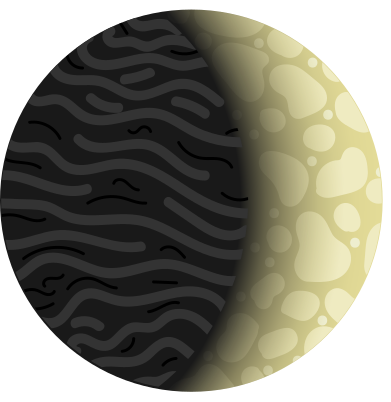

Au'Taelis is the innermost planet of Ae'Uuvoria and the world of Order. It is small, airless and perfectly still.
The planet is tidally locked: one side always faces the star and the other always faces away. There is no sunrise and no sunset. Each side keeps its own weather forever, frozen in place.
Its surface is iron-silicate rock streaked with carbon deposits, darkened and worn by open space. With no atmosphere to carry heat around the planet, the difference between its two halves is extreme.
No life has ever been confirmed there.
Facing the star forever. In places it is hot enough to melt lead.
The thin ring of permanent twilight between the two halves. The only mild ground on the planet.
Turned away from the star forever, in endless darkness.